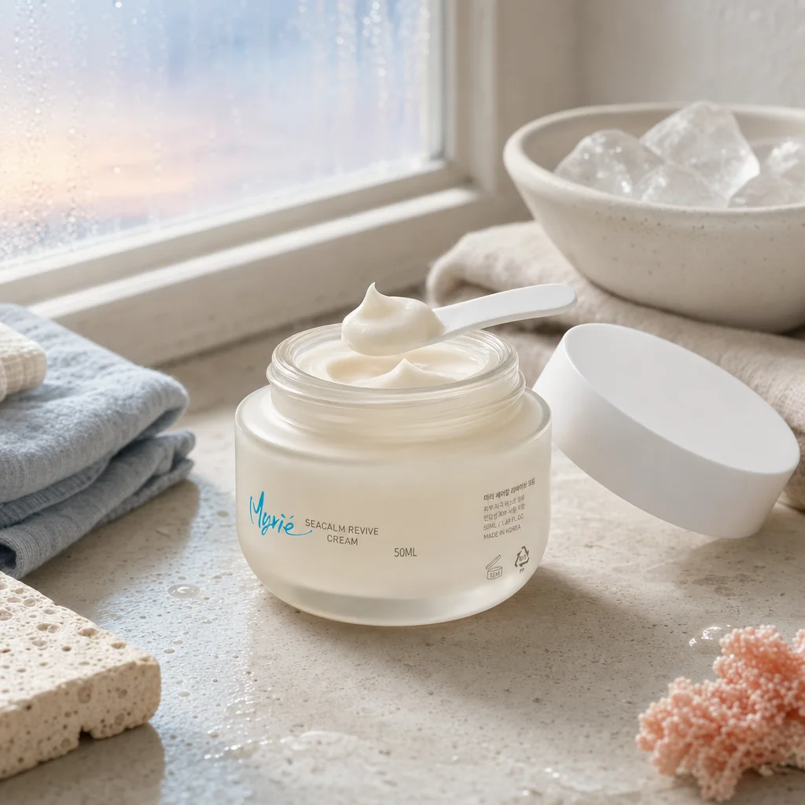

- 홈
- 브랜드 · 뷰티 칼럼
- 얼굴 홍조 진정
세안 후 얼굴이 붉어지고 따가울 때, 피부 진정은 어떻게 하나요?
- 홍조는 혈관이 쉽게 확장되는 피부에서 온도 변화, 마찰, 자극 성분 때문에 나타나며 장벽이 약할수록 자주 생깁니다.
- 급할 때는 찬 수건보다 실온의 물로 헹구고, 알코올·향료 없는 진정 성분(대나무수·알로에·판테놀)으로 덮어 주는 것이 먼저입니다.
- 반복되는 홍조는 자극을 줄이는 세안 습관과 장벽을 보강하는 보습 루틴을 함께 바꿔야 줄어듭니다.

세안 후 얼굴이 붉어지는 이유는 무엇인가요?
얼굴 피부는 다른 부위보다 얇고 혈관이 표면 가까이에 있습니다. 뜨거운 물, 세정력이 강한 클렌저, 수건으로 문지르는 습관이 더해지면 혈관이 확장되면서 붉어지고 화끈거립니다. 여기에 피부 장벽이 약해져 있으면 작은 자극에도 과하게 반응해 홍조가 오래 남습니다.
겨울철 실내외 온도 차, 사우나, 매운 음식, 음주도 같은 원리로 홍조를 부릅니다. 즉 홍조는 '피부가 예민해졌다'는 신호이지 피부 자체가 약해서 생기는 문제만은 아닙니다.
지금 당장 붉은 얼굴을 가라앉히려면?
얼음이나 찬 수건을 대면 순간적으로 가라앉지만, 급격한 온도 변화로 다시 확장되기 쉽습니다. 실온 물로 가볍게 헹군 뒤 수건은 눌러서 물기만 거두는 것이 좋습니다.
그다음 알코올과 향료가 없는 진정 성분으로 바로 덮어 줍니다. 대나무수(밤부사 불가리스수)와 알로에베라잎수는 피부 온도를 낮추고, 판테놀은 자극받은 피부를 편안하게 하면서 수분을 붙잡아 줍니다. 마이리에 씨-캄 리바이브 크림은 이 세 가지를 베이스로 두고 인체적용시험에서 즉각적 피부 진정 24%와 피부자극도 0.00을 확인했습니다.
홍조가 반복되지 않게 하는 루틴은?
세안은 미온수로, 폼은 손에서 충분히 거품을 낸 뒤 얼굴에 20초 이상 머물지 않게 합니다. 스크럽과 각질 제거는 홍조가 가라앉을 때까지 쉬어 주세요.
보습은 세라마이드·판테놀처럼 장벽을 보강하는 성분 위주로 고르고, 새 제품은 귀 뒤에 하루 테스트한 뒤 얼굴에 쓰는 습관이 안전합니다. 외출 전 자외선 차단제는 홍조 피부에도 필수인데, 물리적 차단 성분 위주의 순한 제형을 고르면 자극이 적습니다.
홍조 피부가 피해야 할 것
- 40도 이상의 뜨거운 세안물
- 알코올(에탄올)이 앞쪽에 적힌 토너
- 하루 2회 이상 세안
- 수건으로 문질러 닦기
- 홍조가 있는 상태에서의 각질 제거
 관련 제품마이리에 씨-캄 리바이브 크림 50ml33,900원제품 보기
관련 제품마이리에 씨-캄 리바이브 크림 50ml33,900원제품 보기
자주 묻는 질문
홍조 피부에 미백 제품을 써도 되나요?
진정 성분이 베이스로 들어 있고 자극 테스트를 거친 제품이라면 가능합니다. 다만 처음 2주는 저녁에만 소량 사용하면서 피부 반응을 보고 횟수를 늘리는 것이 안전합니다.
진정 크림은 얼마나 자주 발라야 하나요?
아침저녁 세안 후 기본으로 바르고, 외출 후 붉어졌을 때 한 번 더 얇게 덧발라도 됩니다. 두껍게 한 번보다 얇게 여러 번이 진정에는 더 낫습니다.
홍조가 몇 주째 계속되면 어떻게 하나요?
루틴을 바꾸고 4주가 지나도 홍조가 그대로이거나 열감·통증이 동반되면 화장품으로 관리할 단계가 아닐 수 있으니 피부과 진료를 받아 보시길 권합니다.
* 본 칼럼은 일반적인 피부 관리 정보이며 개인의 피부 상태에 따라 다를 수 있습니다. 제품의 기능성(미백·주름 개선)은 식품의약품안전처 고시 범위 내의 표현이며, 원료 실험 결과는 완제품 사용 효과와 다를 수 있습니다.